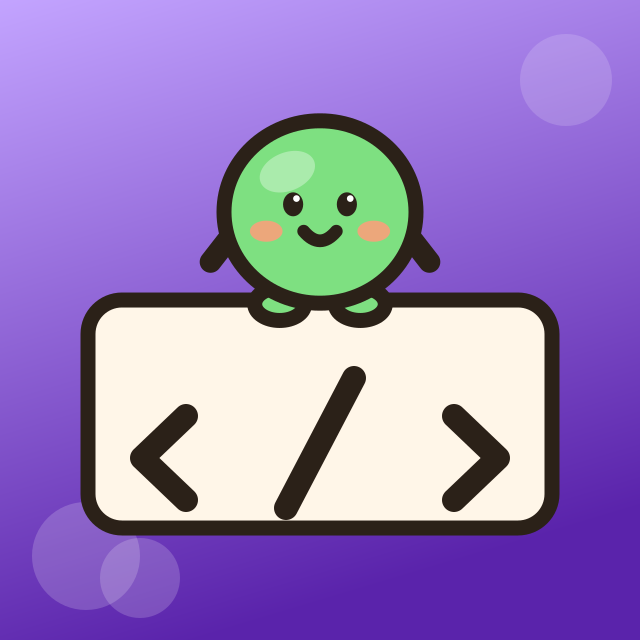
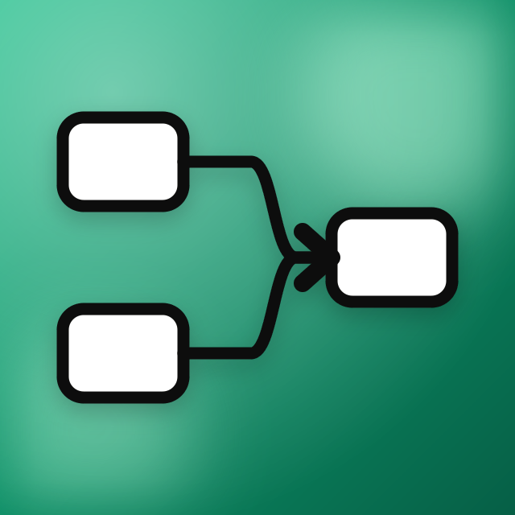
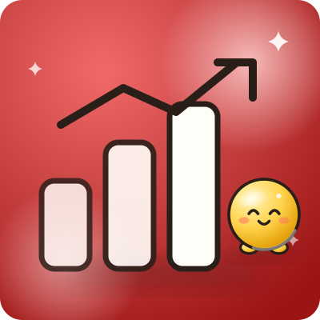

Chapter 01
Started at Binghamton University in Management Information Systems, class of 2028.
AI engineer, agent builder & analyst
My lane
I build AI agents that do real work for real companies, then the tooling that keeps them honest. Right now that means a crew of agents running four client accounts at once, an ad pipeline that reads 721 competitor ads before it writes one, and an audit engine that tells a firm why prospects leave its site.
Incoming BI&A LDP intern at Travelers. Sales Strategy Intern at Voya Financial. Founder of WaterfallGrowth, with three signed clients.
Six systems. Tap any card for the full story.
Still loading.
Started at Binghamton University in Management Information Systems, class of 2028.

2026Shipped the first real systems: UnderwriteIQ and CaseSprint AI, which took first of 50 teams at EY TechX.

2026Joined Voya Financial and automated the sales proposal process end to end with Power Automate and Copilot.
Founded WaterfallGrowth and signed three consulting firms, all running on agents I built.

IncomingJoining Travelers in the Business Insights & Analytics Leadership Development Program.
Four agents, four accounts. Open one to see what it owns.
Works warm leads, logs replies and call outcomes, keeps the CRM current. Reads crm/leads.csv, updates records, flags anything hot.
Writes the sequences that get people to show up: webinar reminder emails and SMS, posts, and the frameworks behind them.
Batches statics and carousels, edits existing creative, builds landing pages. Renders eight statics plus four carousels in one pass.
Sets up Meta campaigns, splits budgets across ad sets, writes the kill and scale rules, then tracks what each one returns.
Three of these are signed clients. The fourth is my own agency.
Joining the Business Insights & Analytics Leadership Development Program to work on analytics across the business insight community.
Automated the sales proposal process end to end with Power Automate and Copilot:
AI-native agency for education consultants and enterprise education firms. Three signed clients: Inspirate, Evergreen and McNamara.
Management Information Systems at Binghamton University, class of 2028. AWS Certified AI Practitioner, Anthropic AI Fluency, AINS.
Tell me what you are trying to automate.
Thanks, I'll get back to you soon.